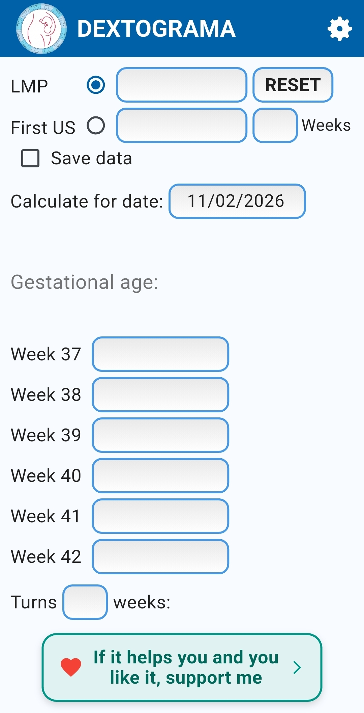
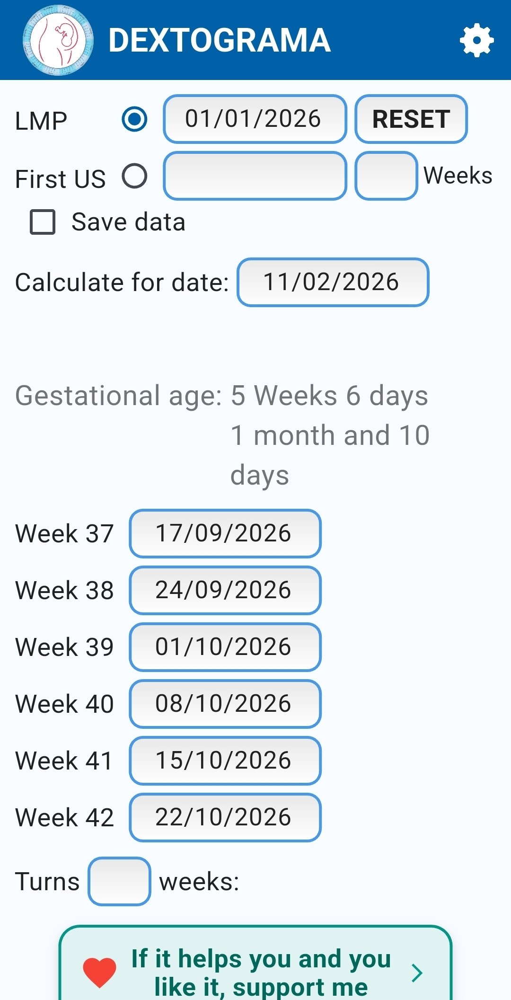
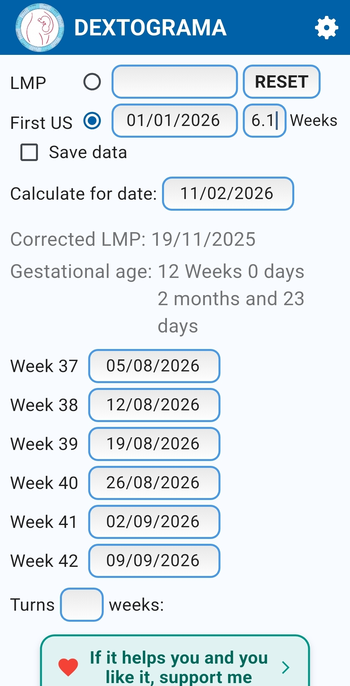
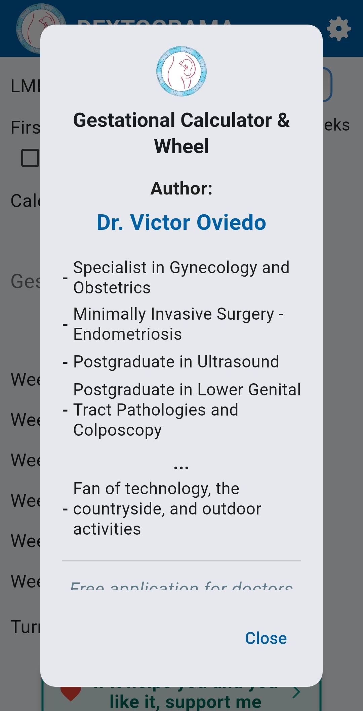
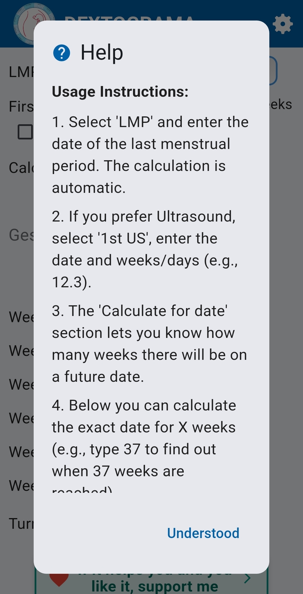
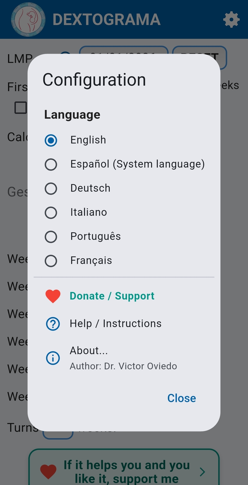

Calcula la edad gestacional
en segundos.
Por FUM o por primera ecografía. Fechas clave (37–42) y cálculo para una fecha futura, en una interfaz rápida y clara.



Por FUM o por primera ecografía. Fechas clave (37–42) y cálculo para una fecha futura, en una interfaz rápida y clara.


Pensado para consultorio y para uso personal: rápido, exacto y sin complicaciones.
Calcula por fecha de última menstruación o por primera ecografía con semanas y días.
Muestra automáticamente la fecha exacta de 37, 38, 39, 40, 41 y 42 semanas.
Ingresa una fecha o una semana objetivo y obtén el resultado de forma instantánea.
Capturas reales de la app.



